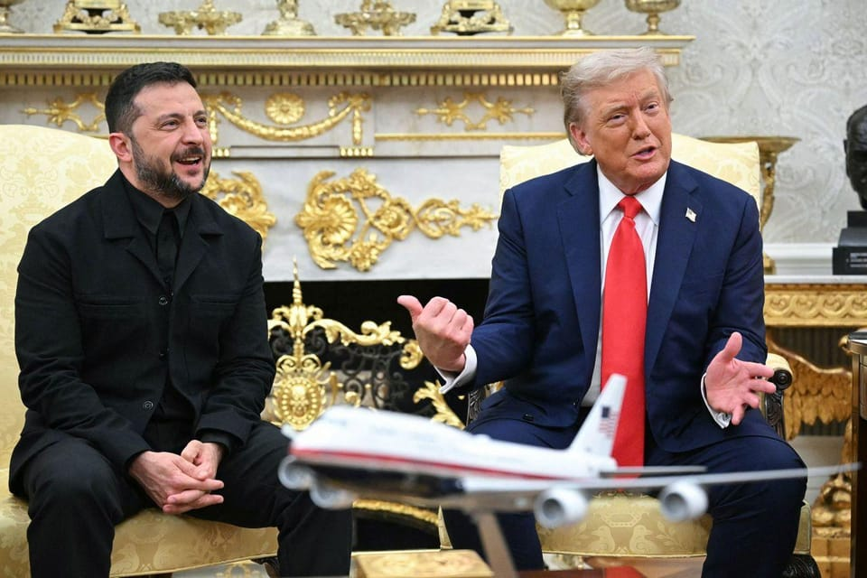

世界苦茶08月19日新闻 | 29条 | 泽连斯基和川普见面,下一步是美俄乌峰会

泽连斯基和川普见面,下一步是美俄乌峰会 | 中国放宽电视剧制作限制 | 德国外长批评北京在亚太挑衅 | 上证指数创十年新高市值破白万亿
每日三條新聞解析（prompt升级）
苦茶数据
美元兑人民币：7.18（昨日7.18，前日7.18）
美元兑日元：147.57（昨日147.40，前日146.85）
上证指数：3727（昨日3723，前日3696）
标普500指数：6449（昨日6449，前日6458）
比特币：115060（昨日115303，前日118197）
布伦特原油：66.21（昨日66.06，前日65.85）
中国新闻
• 中国驳斥美使馆铜矿事故警告 ：中国外交部驳斥了美国驻赞比亚大使馆有关2月铜矿事故的警告。据彭博社报道，溃决事故发生在2月，不过美国使馆本月的警告再度引发关注，称泄漏的有毒淤泥量可能远高于估计，最多可能高出30倍。美国驻赞大使称，此次事件可能是世界上此类灾难中最严重的一次，并下令美方人员立即撤离受影响区域。
• 港调查显示，六成工人恶劣天气仍上班 ：香港极端天气频发之际，工联职安健协会的调查显示，六成工人在恶劣天气下仍需要上班，但多数雇主未提供交通或防护措施。协会呼吁政府强化工作守则宣传，并在必要时立法规管，明确须返工“指定人员”的定义与风险评估。据《星岛日报》报道，香港工联职安健协会发布《恶劣天气及“极端情况”下上班问卷调查》，共访问621名工人。结果显示，逾六成受访者在八号风球、黑色暴雨或极端情况生效期间仍需要上班，其中53.4%不知道在信号生效后四小时内通勤受《雇员补偿条例》保障，23.8%更被要求在信号解除后一小时内返回岗位。
• 中国或放宽电视剧制作限制 ：中国据报可能放宽对本土电视剧制作的限制，中国媒体股应声上涨，分析师称此举将有利于内容制作商和长视频平台。据彭博社报道，华策影视和芒果超媒的股价在星期一双双触及20%涨停，影视ETF也一度上涨6%，创2月13日以来最大涨幅。在香港市场，阅文集团和大麦娱乐控股分别大涨25%和11%。据行业服务平台“今日流媒体”上周末引述匿名消息人士报道，中国国家广播电视总局上星期五召开会议，传达改进电视剧内容制作和创新的相关措施；相关指导意见包括取消剧集数量上限、古装剧播出时段限制以及海外剧引进配额等规定。
• 德国外长批北京在亚太挑衅 ：德国外交部长瓦德富尔在日本访问期间，批评北京在亚太地区的态度日趋挑衅。综合法新社和日本共同社报道，瓦德富尔星期一在与日本外长岩屋毅会面后说，中国大陆一再在台湾海峡、东海和南中国海地区公开威胁要单边改变现状，作出对他们有利的举动。瓦德富尔说：“让这个国际贸易敏感中心紧张局势升温，将给全球安全和世界经济带来严重后果。”
• 韩国或下周派特使团访华 ：综合多方消息，韩国总统李在明或下周派遣特使团到访中国。韩联社引述执政党共同民主党人士星期一报道，韩中正围绕两国建交纪念日等因素就特使团访华日程安排进行协调。特使团或将在8月25日前后访华，但具体日期仍待确定。据悉，特使团成员可能包括前国会议长朴炳锡、民主党议员金太年和朴钉。前总统卢泰愚之子、东亚文化中心理事长卢载宪也有望加入特使团。
亚太印太新闻
• 泰国推数码资产旅游支付计划 ：泰国政府星期一宣布，将放宽限制，允许外国游客将数码资产兑换成泰铢，以支付旅费和在泰国期间的消费。泰国财政部长比猜星期一在新闻发布会上说，政府希望促进创新以及支持数码资产的使用，以刺激泰国旅游业，同时为外国人提供便捷的支付方式。他补充说，这项名为“TouristDigipay”的计划将于第四季度开始试行18个月。
• 马国反对党组跨党派阵线 ：马来西亚12个反对党同意组成跨党派阵线，并召开首次会议讨论多项国内课题，但并未讨论来届大选是否合作。国民联盟主席慕尤丁星期一在会议后告诉媒体，这个反对党阵线并非正式注册的政党联盟，各党只是共同讨论涉及人民与国家利益的事务、并达致相同立场。慕尤丁强调，这个阵线并非正式注册的政党联盟，只是一个宽松的平台。
• 台湾拟修法严审身份恢复申请 ：台湾预告将对申请恢复台湾人民身份许可办法进行修正，增加应有具体事证认定符合的三个情形之一，其中包括对国防安全、国际形象或社会安定有重大特殊贡献。陆委会回应时说，“台湾籍”非常可贵，不是想取得就能取得。根据台湾内政部户政司全球资讯网上星期一发布的信息，修正目的是考量到两岸现况变迁，为落实行政院提出国安十七项因应策略，防止大陆统战活动，借由现行的回复制度，使境外敌对势力渗入，影响国安及社会安定，就许可已丧失台湾人民身份者申请回复台湾人民身份，宜采较严谨的规范，于是拟具《在台原有户籍大陆地区人民申请回复台湾地区人民身份许可办法》修正草案。修正草案规定，申请回复台湾人民身份者，应有具体事证认定符合下列情形之一：一、对台湾国防安全、国际形象或社会安定有重大特殊贡献。二、有助于台湾整体利益。三、基于人道考量。
• 金正恩8月18日视察朝人民军海军崔贤号驱逐舰，了解该舰武器系统综合运行测试和水兵训练及生活情况，听取崔贤级三号舰建造情况及其远景计划汇报： 金正恩强调，崔贤号要按计划在10月内进入舰艇性能及作战执行能力评估课目，要求“超高速增强海军作战能力”，创新现有军事理论和实践、快速推进核武装化。针对美韩近日起开始联演 ，金正恩称其“近来具有企图实现含有核要素的军事勾结”，“要求我们以主动而压倒性的变化作出回应”。
科技新闻
• 谷歌调查显示，87%游戏开发者用AI ：谷歌云的一项调查显示，87%的电子游戏开发者正在使用人工智能智能体来精简和自动化任务，因为该行业在一波创纪录的裁员后正专注于优化成本。这份周一发布的报告中的大多数受访者表示，AI正在帮助自动化繁琐且重复的任务，解放开发者以专注于更具创造性的问题。这项由谷歌和哈里斯民意调查开展的研究，于6月下旬至7月上旬调查了来自美国、韩国、挪威、芬兰和瑞典的 615 名游戏开发者。研究表明，约44%的开发者使用智能体快速优化内容和处理如文本、语音、代码、音频和视频等信息，使其能够行使自主权并做出决策。根据调查，94%的开发者预期AI长期来看会降低整体开发成本。 （翻評：很難想象有13%的人沒有使用。）
• 谷歌在澳因反竞争合作被罚5500万澳元 ：谷歌周一同意在澳大利亚支付5500万澳元的罚款。此前，澳大利亚消费者监管机构发现谷歌通过向该国两大电信公司支付费用，促使这两家公司在安卓手机上预装谷歌的搜索应用，从而排除竞争对手的搜索引擎，损害市场竞争。关于谷歌与澳大利亚电信公司的反竞争合作，该国消费者监管机构于周一表示，谷歌与 Telstra以及 Optus达成了合作协议。根据这些协议，在2019年末至2021年初期间，谷歌与这两家公司分享了谷歌搜索在安卓设备上所产生的广告收入。澳大利亚竞争与消费者委员会称，谷歌承认这些协议对搜索引擎市场竞争产生了重大影响，并已停止签订类似协议，同时也同意支付罚款。
• 中国要求数据中心使用更多国产AI芯片： 中国政府正要求其数据中心使用更多国产计算芯片，此举凸显出在美国收紧出口管制的背景下，中国政府正加快努力减少对外国技术的依赖。据知情人士透露，全国范围内的公有计算中心被要求从国内生产商处采购超过50%的芯片，以支持本土半导体产业。这一强制要求源于上海市去年三月提出的指导方针，上海是国内首批规定到2025年，本市智能计算中心的国产计算和存储芯片采用率应超过50%的地区之一。这些指导方针是中国金融中心加强人工智能计算资源政策的一部分。在数据中心行业担任顾问的消息人士表示，今年早些时候，上海智能计算中心的芯片配额要求已成为全国性强制性政策。
财经新闻
• 英美钢铁零关税未落实 ：英国今年5月率先与美国达成贸易协议，但三个多月过去了，英国钢铁业者的输美钢品仍面临25%关税，两国此前达成的零关税至今仍未落实。彭博社星期一报道指，日本、欧盟和韩国一个月前也先后宣布在汽车关税上取得宽减，但同样至今未付诸实施。除了钢铝产品面临50%关税外，日韩和欧盟的汽车仍面临25%关税。日本首席贸易谈判代表赤泽亮正上周五表明，希望美方能尽快签署行政命令。他透露，日本一汽车制造商因关税每小时损失高达1亿日元。
• 沪指创十年新高市值破百万亿 ：经历近三年的低迷后，中国股市星期一迎来历史性时刻。沪指创10年新高，A股市值也史上首次突破100万亿元人民币大关。受访分析师指出，目前中国投资者信心充足，短期行情有望延续，但经济基本面尚不足以支撑股市长期高位，“长牛”的基础仍未形成。本周首个交易日，A股延续上周的涨势，上证指数星期一开盘火力全开，突破2021年以来的高点3731.69点。午盘后，沪指一度冲上3745.94点，创近10年新高；后小幅回落，收于3728.03点，单日涨0.85%。
• 民调显示，澳人更忧美关税政策 ：一项最新民调显示，相较于中国在亚太地区的军事扩张，澳大利亚人更担心特朗普政府推行的保护主义贸易政策。彭博社报道，据《澳大利亚人报》星期一公布的Newspoll调查结果，42%的受访者将美国关税列为首要忧虑，而认为中国构成战略威胁的比例为37%。另有21%的人表示两者都不令他们担心。这项调查于8月11日至14日进行，误差幅度为正负三个百分点。
• 中国稀土出口创半年新高 ：中国稀土产品的出口跃升至今年1月以来的最高水平。据彭博社测算，6月出口量大增69%，达到6422吨，创下1月以来的最高水平。稀土产品类别通常以磁铁为主，磁铁是一种微小却关键的制造部件，在今年早些时候成为中美贸易谈判的焦点。在中国为报复美国关税威胁而对稀土磁铁实施全面出口管制后，4月和5月的稀土供应大幅下滑。随后，在双方达成贸易休战协议后，北京方面同意加快发货速度。
• 长城汽车巴西拟建第二厂 ：中国车企长城汽车巴西新厂刚投产，公司已在当地为第二家工厂选址。据彭博社报道，长城汽车巴西机构事务董事巴斯托斯当地时间上星期五在巴西新厂竣工投产仪式上受访时，透露上述消息。他说，长城汽车正就二厂选址进行磋商，并已收到圣卡塔琳娜、巴拉那、圣保罗和圣埃斯皮里图等州的献议书。
• 印度拟调降小车与保险GST税率 ：印度政府消息人士说，印度提议将小型汽车的商品及服务税从目前的28%降至18%，作为一揽子大规模消费税减免措施的一部分。路透社引述消息人士报道，健康和人寿保险费的商品及服务税也可能从目前的18%降至5%，甚至零。消息人士称，如果减税计划获得批准，政府预计将在10月为期五天的印度教重要节日排灯节前宣布。排灯节也是印度最大的购物季。
• 中国7月资本外流创历史新高 ：受新的市场自由化措施推动，中国大陆投资者大举买入香港资产，中国7月的资本外流创下历史新高。彭博社报道，根据中国国家外汇管理局上星期五发布的数据，上个月，中国国内银行代客户向境外净汇出资金583亿美元，用于证券投资，规模创下历史新高。这是自2010年有记录以来的最大单月资金外流。资本外流加剧的部分原因在于大陆投资者今年大举买入香港股票，以及7月“南向债券通”项目的扩容，允许更多境外债务投资。
俄乌战争
• 德国称俄乌会谈两周内举行 ：德国总理默茨说，乌克兰总统泽连斯基与俄罗斯总统普京的会谈将在未来两周内举行。路透社报道，默茨星期一说，美国总统特朗普在与普京通话后同意举行俄乌会谈，但具体地点尚未确定。他告诉记者说：“美国总统与俄罗斯总统通了电话，并同意俄罗斯总统普京与乌克兰泽连斯基将在未来两周内举行会谈。”
• 特朗普允助乌克兰安全保障 ：美国总统特朗普告诉乌克兰总统泽连斯基，美国将在结束俄乌战争的协议中协助保障乌克兰的安全，但具体的援助范围上不明确。特朗普也指，正在安排一场俄乌会谈，随后进行俄乌美三方会谈。路透社报道，特朗普星期一在白宫会见泽连斯基时作出上述承诺。特朗普和泽连斯基都表示，他们希望星期一的会谈最终能促成与俄罗斯总统普京的三方会谈。
• 纳瓦罗批印度购俄油破坏制裁 ：白宫贸易顾问纳瓦罗在英国《金融时报》发表一篇措辞强硬的专栏文章，批评印度在俄乌战争爆发后大量购买俄罗斯石油。纳瓦罗在文章中批评指，自俄罗斯入侵乌克兰以来，印度对俄罗斯石油的购买量急剧增加，这是“投机取巧，并且对全球孤立克里姆林宫和遏制普京战争机器的努力具有极大的腐蚀性”。纳瓦罗是美国总统特朗普惩罚性全球关税背后的主要推动者。他将印度的贸易壁垒与他所谓的印度对俄罗斯的财政支持联系起来，认为这些交易是以牺牲美国利益为代价。
• 特朗普与泽连斯基及欧盟领导人会晤 ：特朗普8月18日与到访白宫的泽连斯基及多位欧洲领导人举行会晤。特朗普与泽连斯基首先举行双边会晤，随后特朗普、泽连斯基、北约秘书长吕特、欧盟委员会主席冯德莱恩、英国首相斯塔默、意大利总理梅洛尼、芬兰总统斯图布、德国总理默茨、法国总统马克龙举行多方会晤。在双边会晤中，与半年前的不欢而散不同，此次会议较为友好。泽连斯基身着黑色正式夹克，并得到特朗普称赞。泽连斯基在简短讲话中8次对各方表达感谢。美国副总统万斯在公开会晤中保持沉默。在多方闭门会晤前，泽连斯基称他和特朗普的两人对话“非常好”，双方讨论了安全保障和人道主义问题，并很高兴特朗普与他和普京举行三方会晤。特朗普亦表态支持三方领导人会晤，并承诺美国将在协议中帮助保证乌克兰的安全。其他欧洲领导人呼吁停火并希望美国推动安全保障。知情人士称，多方会晤过程中，特朗普一度暂停会晤并与普京单独通话。克里姆林宫称，特朗普与普京的通话持续约40分钟。特朗普通报了此次会晤的情况，两人支持俄乌代表继续直接谈判，并讨论了提高俄乌会谈代表级别的可能性。会晤结束后，特朗普表示已开始安排普京和泽连斯基之间的会晤，并将举行美俄乌三方会晤。当天的会议集中在对乌克兰的安全保障上，这些保障将由欧洲各国在与美国的协调下提供。Axios报道，泽连斯基与普京有望在8月底前举行会晤。《金融时报》报道，乌克兰承诺由欧洲资助购买1000亿美元的美制武器，作为获得美国安全保障的协议的一部分。
国际新闻
• 哈马斯收到加沙新停火方案 ：一名巴勒斯坦官员星期一说，哈马斯在开罗的谈判代表收到一份新的加沙停火提案，这项提案要求初步达成60天的停火协议，并分两批释放人质。这名不愿透露姓名的官员星期一告诉法新社：“这项提案是启动永久停火谈判的框架协议。”这名官员说，哈马斯将在领导层内部举行磋商，并与其他巴勒斯坦派别的领导人一起审查调解员提出的建议。
• 以色列爆发大规模反战抗议 ：以色列爆发大规模抗议示威，数十万民众走上街头，反对总理内坦亚胡扩大在加沙的军事行动，并要求政府尽快与哈马斯达成停火协议，确保人质获释。哈马斯则表明，已收到新的加沙停火方案。巴勒斯坦官员星期一透露，在埃及首都开罗的哈马斯谈判代表已收到一份新的加沙停火提案，内容包括先行实施为期60天的停火，并分两批释放人质。官员说：“这一提案是启动永久停火谈判的框架协议。”
• 哈马斯同意停火并提出换俘条件 ：哈马斯及多个巴勒斯坦派别8月18日同意由调解方提出的新加沙停火提议。消息人士称，新提议包含一份通往全面停火的路线图，从停火第一天起即启动关于全面协议或永久停火的谈判。60天停火期间，哈马斯释放一半、即10名仍活着的以色列被扣押人员，并交还一半、即18具被扣押人员遗体，以换取以方释放巴勒斯坦囚犯。哈马斯要求以色列释放140名被判处终身监禁的巴勒斯坦囚犯及60名被判处15年以上监禁的巴勒斯坦囚犯；每具以色列被扣押人员遗体换取10具巴勒斯坦死者遗体；以色列释放其关押的所有巴勒斯坦妇女和儿童。新提议还包括，停火协议生效后，以色列立即允许向加沙地带运入紧急人道援助物资，包括燃料、水和电力，并允许修复加沙地带的医院和面包房，允许为清理废墟提供必要设备。联合国及其机构以及在加沙地带开展工作的其他国际组织将负责接收和分发相关援助物资。埃及和卡塔尔将联系美国中东问题特使威特科夫，以推动停火谈判恢复，争取达成协议。
• 西班牙林火致四死延烧逾十万公顷 ：西班牙20个地点发生严重林火，加上酷热天气阻碍灭火工作，政府从军事应急部队增派500名士兵支援灭火行动。路透社报道，过去10多天，西班牙多地发生火患，烧毁面积超过11万5000公顷，已造成三人死亡。当局星期一说，一名消防员驾驶的卡车在西班牙西北部翻车身亡，使得林火造成的死亡人数增至四人。西班牙国家气象局说，星期天部分地区气温高达45摄氏度。
• 澳航非法裁员被罚9000万澳元 ：澳大利亚一家法院裁定，昆达士航空集团因在冠病疫情期间非法解雇1820名地勤人员，面对9000万澳元罚款。彭博社报道，澳洲联邦法院星期一裁定，昆达士航空集团须将5000万澳元罚款支付给运输工人联合会，剩余部分则可能在稍后的听证会上决定是否分配给1820名遭解雇的员工。这笔罚款是在昆达士航空去年向受影响的前雇员支付1亿2000万澳元赔偿金的基础上额外支付的。法官迈克尔·李在长达一小时的宣判中，批评昆达士航空内部文化。他也质疑公司的悔悟程度及变革的决心，并指出公司在案件审理中采取“毫不妥协、激烈对抗的诉讼策略”。
• 纽约酒吧枪击案三死九伤 ：美国纽约市布鲁克林区一家酒吧发生枪击案，造成三人死亡和九人受伤。中新社报道，纽约市警察局局长蒂施星期天在记者会上说，这起枪击案发生在当天凌晨3时27分左右，警方赶到位于皇冠高地社区的事发酒吧时，现场一片混乱。当地警方目前确认有12名受害者，年龄从19岁至61岁不等，其中三名男子宣告死亡。